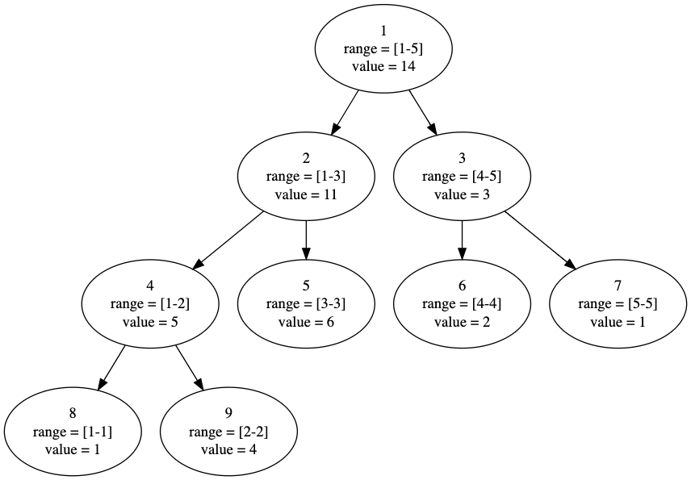
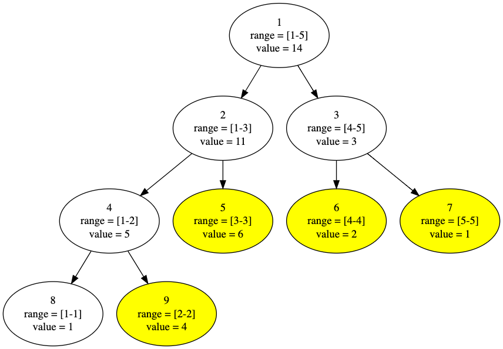
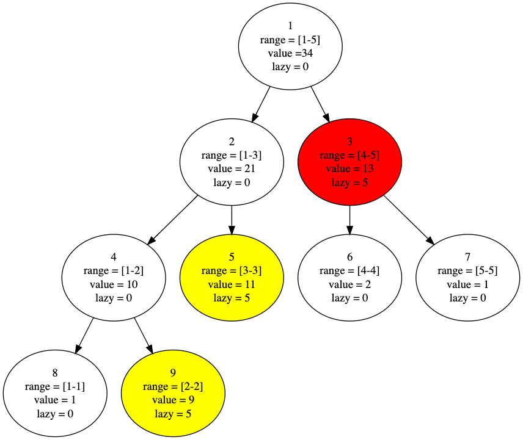

線段樹 / Segment Tree
線段樹一般用來維護滿足結合律的區間信息，如區間和、區間乘積等，其優於樹狀數組的地方在於，可以處理區間修改，缺點是實現比較繁雜，不像樹狀數組可以在不壓行的情況下，以差不多十行的長度實現。
順帶一提，有不少線段樹的問題可以用分塊來做，雖然複雜度掉到（可區間改值的區間和為例），但依然足夠快，重點是實作較為快速。
接下來說明皆以區間和的線段樹為例，主要操作如下：
- 區間查詢：查詢區間內元素的和，
- 區間修改：更改區間內元素的值（一般為加上某數），
線段樹是一顆平衡二叉樹，每一個節點代表一個區間的和，每向下一層，子結點區間為母節點區間的一半，當一節點區間大小為時，沒有子節點，該節點的區間和即為自己的值。
根據定義，假設我們有一個長度為的數組，我們可畫出其線段樹如下圖。
圖中每個節點第一行的數字為節點編號，為區間範圍、為該區間和。

如圖可看出，區間為的節點的左右子節點分別為, ，左子節點的區間為，右子節點的區間為。
初始化線段樹
在查詢與修改前，我們必須依照原數組建構出一棵線段樹，而一般我們採用遞歸的方式建構。
遞歸條件：
- 當區間大小不為時，繼續往下建構子節點
- 若區間大小為，停止建構子節點，並將該節點的區間和設為自己的值
- 當子節點建構完成後，該節點區間和等於子節點區間和的和
初始化相關的程式碼：
- 方便使用的定義：
// lid 左節點編號 = 母節點 * 2 // rid 右節點編號 = 母節點 * 2 + 1 // 用位運算的方式節省時間 #define lId (id << 1) #define rId (id << 1 | 1)
- 線段樹的結構體：
struct segmentTree { int l, r; // 該節點區間 ll lazy; // 懶標記（還未提到，可先忽略） ll sum; // 區間和 inline int len() { // 計算區間長度 return r - l + 1; } } tree[MAXN * 4] // 線段樹節點數量不會多於區間大小的四倍
- 向上更新：
// 由於我們先確定的區間和是最底層節點的區間和（區間為1），因此上層節點的區間和要由下層相加而得 void pushUp(int id) { tree[id].sum = tree[lId].sum + tree[rId].sum; }
- 建構線段樹：
// id 所要建構的節點編號 // bl 所要建構的區間的左端點 // br 所要建構的區間的右端點 void build(int id, int bl, int br) { // 設定當前節點的區間 tree[id].l = bl; tree[id].r = br; tree[id].lazy = 0; // 若區間大小為1，停止遞迴 if (bl == br) { tree[id].sum = a[bl]; return; } // 若不為1，向下建構 int mid = (bl + br) >> 1; build(lId, bl, mid); build(rId, mid + 1, br); // 建構完子節點，該節點區間和為子節點的區間和相加 pushUp(id); }
區間修改
了解線段樹的結構後，一個直覺的區間修改方式便是遞迴到符合區間要求的葉節點，改值後再用更新線段樹，如下圖更改的區間，便可透過更改黃色節點與更新完成區間修改。

但仔細想想，不難發現這樣的複雜度是難以承受的，事實上，其複雜度為，因為最底層節點數為，向下遞迴到葉節點複雜度為。
因此我們在此引入懶標記的概念，它的作用在於更新時不用更新至最底層，可以在上層偷懶標記為更新完成的部分。
假設我們要對的區間加，透過懶標記，我們可以如此操作。

如上圖，我們在更新時，更新了紅色節點的值（加上），但卻沒有向下遞迴，而是打上一個懶標記，意指其子節點區間都要加，但現在懶得做。黃色節點也是一樣的狀況，只不過因為葉節點沒有子節點的緣故，其實下方並不存在未更新的節點。
透過懶標記，我們可以更早地結束遞迴，而不用一路往下走到葉節點，並將複雜度優化到了。
區間修改相關的程式碼：
- 向下更新：
// 將懶標記向下更新一層 // id 現在所在的節點編號 void pushDown(int id) { // 若懶標記為0，自然不需更新 if (!tree[id].lazy) return; // 向下更新一層後，下下層仍未更新，因此下層的懶標記要更改 tree[lId].lazy += tree[id].lazy; tree[rId].lazy += tree[id].lazy; // 更新下層的值 tree[lId].sum += tree[id].lazy * tree[lId].len(); tree[rId].sum += tree[id].lazy * tree[rId].len(); // 更新完成，此節點懶標記歸零 tree[id].lazy = 0; }
- 區間修改：
// id 現在所在的節點編號 // ul 要更新的區間的左端點 // ur 要更新的區間的右端點 // value 區間加上的值 void updateInterval(int id, int ul, int ur, ll value) { int l, r; l = tree[id].l; r = tree[id].r; // 若現在節點的區間完全屬於要更新的區間，可更新現在節點的值，並打上懶標記後結束遞迴 if (ul <= l && r <= ur) { // 區間和，該節點加上的值為value * 區間長度 tree[id].sum += value * tree[id].len(); tree[id].lazy += value; return; } // 若要向下遞迴，則先把此層的懶標記向下更新一層（不會增加複雜度，因原本就要向下遞迴） pushDown(id); int mid = (l + r) >> 1; // 若更新的區間左端點小於左節點的區間右端點，則明顯需向左節點更新 if (ul <= mid) updateInterval(lId, ul, ur, value); // 同理 if (ur > mid) updateInterval(rId, ul, ur, value); // 子節點處理完仍要向上更新 pushUp(id); }
區間查詢
區間查詢概念跟區間修改相同，一樣是盡可能早返回，因此若一節點區間屬於要查詢的區間，便不用向下繼續遞迴。
延續前圖，數組為，節點有懶標記為更新，舉幾個查詢的區間方便理解：
-
查詢，返回紅色節點的值之和

-
查詢，返回紅色節點的值之和

-
查詢，在節點需要向下查詢，因此先更新再遞迴

區間查詢程式碼：
- 區間查詢：
// id 現在所在的節點編號 // ql 要查詢的區間的左端點 // qr 要查詢的區間的右端點 ll query(int id, int ql, int qr) { int l, r; l = tree[id].l; r = tree[id].r; // 若一區間完全屬於查詢的區間，則不用向下查找 if (ql <= l && r <= qr) return tree[id].sum; // 向下查找之前，須向下更新，避免得到的值是未完成更新的部分 pushDown(id); ll ret = 0; int mid = (l + r) >> 1; if (ql <= mid) ret += query(lId, ql, qr); if (qr > mid) ret += query(rId, ql, qr); return ret; }
線段樹還可以做各種符合結合率的區間問題，最常用的除了區間和就是區間極值，可由區間和模板輕易更改而成，因此不做贅述。